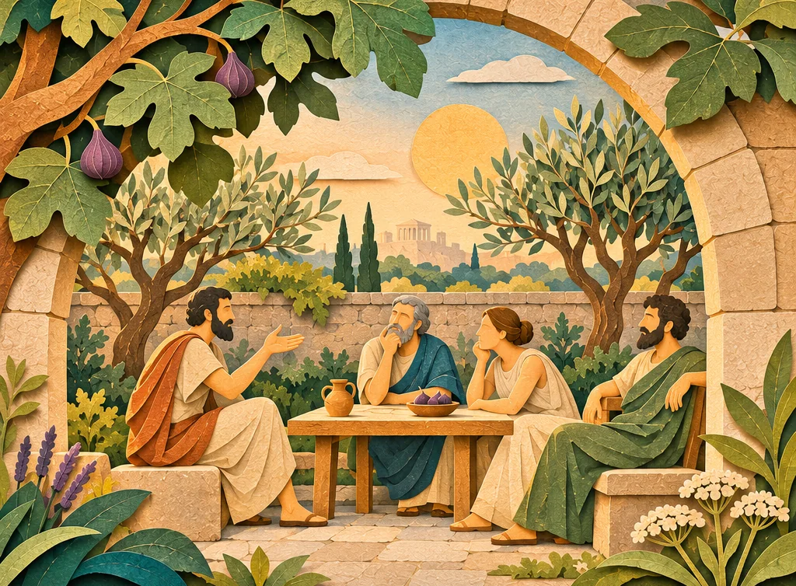
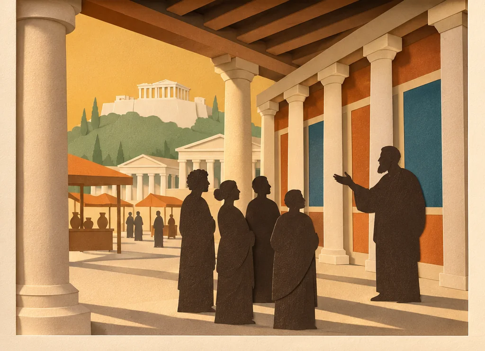
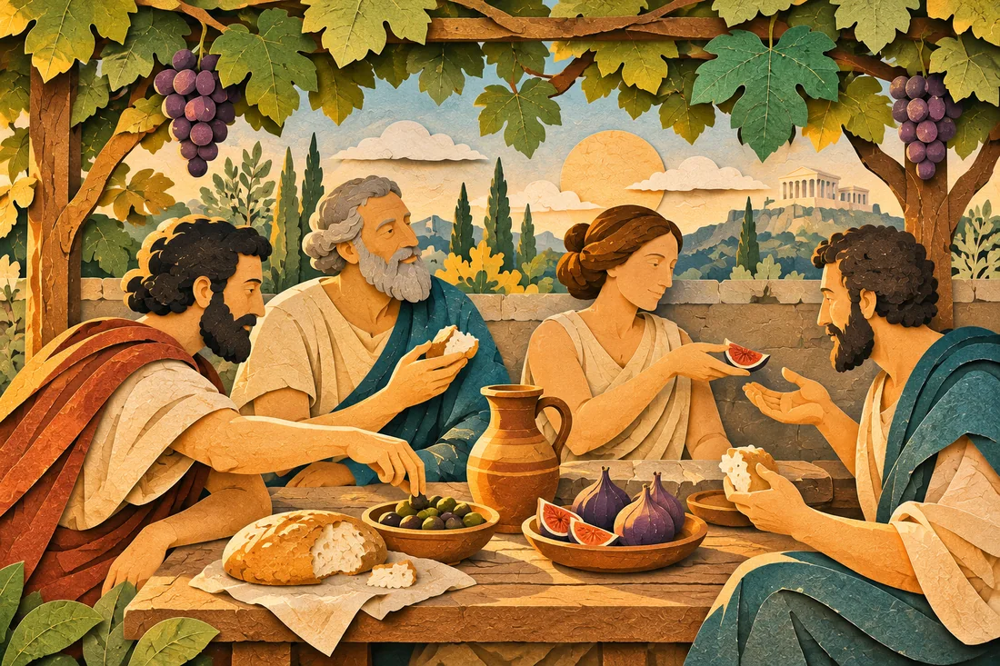

À quelques années d’écart, dans la même ville, deux écoles ouvrent leurs portes. Vers 306 avant notre ère, Épicure achète un jardin à Athènes et y installe une communauté de disciples, hommes, femmes et esclaves confondus, fait rarissime pour l’époque. Une décennie plus tard, Zénon de Citium commence à enseigner sous un portique peint, à quelques centaines de mètres de là.
Les deux écoles naissent dans le même contexte : la mort d’Alexandre le Grand a fait éclater son empire, les cités grecques ont perdu leur autonomie politique, et le monde paraît soudain beaucoup plus instable qu’il ne l’était du temps de Platon et d’Aristote. Stoïciens et épicuriens répondent à la même question, celle de la tranquillité dans un monde incertain, par deux voies presque opposées.
| Stoïcisme | Épicurisme | |
|---|---|---|
| Fondateur | Zénon de Citium | Épicure |
| Le seul vrai bien | La vertu | Le plaisir, bien compris |
| Rapport au monde | S’engager, agir selon son devoir | Se retirer, « vivre caché » |
| Rapport à la douleur | L’affronter avec discernement | L’éviter par une vie simple |
| Objectif final | La tranquillité par la vertu | La tranquillité par le plaisir mesuré |
Qu’est-ce que le stoïcisme
Pour les stoïciens, le seul vrai bien, c’est la vertu : agir avec justice et discernement, quelles que soient les circonstances. Tout le reste, la santé, la richesse, la réputation, est « indifférent » : ni bon ni mauvais en soi. La pratique centrale, la dichotomie du contrôle, consiste à distinguer ce qui dépend de nous de ce qui n’en dépend pas, et à n’investir son énergie que dans la première catégorie. C’est une philosophie de l’engagement : on reste dans le monde, on agit, on assume des responsabilités publiques, et on travaille son jugement plutôt que les circonstances elles-mêmes. Le détail de cette doctrine est développé sur la page consacrée au stoïcisme.
Qu’est-ce que l’épicurisme
Pour Épicure, le seul vrai bien, c’est le plaisir, mais pas au sens où on l’entend d’ordinaire. Le plaisir épicurien, c’est d’abord l’absence de douleur physique, l’aponia, et de trouble de l’âme, l’ataraxie, pas l’accumulation d’expériences intenses. Un repas simple apaise la faim aussi bien qu’un banquet ; au-delà, on n’ajoute que des désirs superflus, source de nouvelles inquiétudes.
« Ne crains pas Dieu, ne t’inquiète pas de la mort ; ce qui est bon est facile à se procurer, et ce qui est terrible est facile à supporter. »
Épicure, résumé en quatre points connu sous le nom de Tétrapharmakos
Cette sérénité passe par le retrait plutôt que par l’action : Épicure recommandait de vivre caché, loin des ambitions politiques et de leurs déceptions, entouré d’un petit cercle d’amis choisis, qu’il considérait comme le plus sûr des plaisirs.

Ce qui les rapproche
Les deux écoles visent exactement le même état intérieur, que les deux appellent d’ailleurs par le même mot : l’ataraxie, l’absence de trouble. Toutes deux rejettent la peur superstitieuse des dieux et de la mort comme un obstacle à une vie tranquille. Toutes deux sont des philosophies pratiques avant d’être des systèmes théoriques : on ne les étudie pas, on les exerce, au jour le jour, par de petits ajustements répétés plutôt que par une conversion soudaine.

Ce qui les oppose vraiment
La vraie ligne de fracture n’est pas le plaisir contre la vertu, c’est l’engagement contre le retrait. Le stoïcien reste dans la cité, prend des responsabilités, affronte directement ce qui le dérange, convaincu que la vertu ne se prouve que dans l’action. L’épicurien se retire d’un monde jugé trop instable pour qu’on y investisse son bonheur, et cultive un espace réduit mais maîtrisé : son jardin, ses amis, ses besoins simplifiés.
Ce n’est pas un hasard si le stoïcisme a produit un empereur, Marc Aurèle, pendant que l’épicurisme a surtout produit des communautés retirées : les deux philosophies restent fidèles, jusque dans leurs résultats concrets, à ce qu’elles prêchent.


Lequel choisir au quotidien
Face à une contrariété, un stoïcien se demande d’abord ce qui, dans la situation, dépend encore de lui, pour continuer d’agir malgré tout. Un épicurien se demande plutôt si le désir ou l’ambition à l’origine de cette contrariété était vraiment nécessaire, et s’il ne vaudrait pas mieux le laisser tomber. Les deux questions sont utiles, et rien n’empêche de les poser toutes les deux : garder l’exigence stoïcienne pour ce qu’on a choisi d’assumer, et la simplicité épicurienne pour tout ce qu’on pourrait simplement cesser de vouloir.
En bref
📌 Même objectif, deux chemins opposés. Stoïciens et épicuriens visent tous les deux la tranquillité intérieure, mais le stoïcien l’atteint en s’engageant dans le monde et en travaillant son jugement, l’épicurien en se retirant d’un monde jugé trop instable.
📌 La vraie opposition n’est pas plaisir contre vertu. C’est l’engagement contre le retrait : l’un reste et agit, l’autre se protège en réduisant ses besoins et son exposition au monde.
📌 Les deux se pratiquent, elles ne s’étudient pas. Que ce soit par la dichotomie du contrôle ou par le tri entre désirs nécessaires et désirs superflus, les deux écoles proposent un exercice quotidien, pas une théorie à connaître.